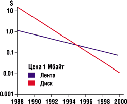
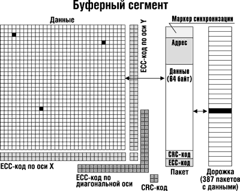
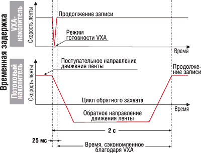
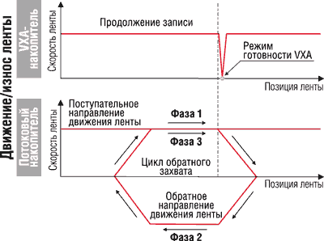
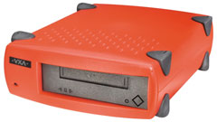
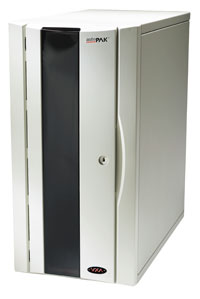

Андрей Борзенко
В последнее время, стремясь удовлетворить требования заказчиков, фирмы-производители неуклонно снижали стоимость серверов и увеличивали емкость систем хранения данных. В то же время стоимость устройств хранения на магнитной ленте продолжала расти вместе с увеличением их емкости и производительности. Более того, до сих пор считается, что обычная технология хранения данных на ленте не обеспечивает достаточной надежности считывания данных. Напомним, что накопители на магнитной ленте применяются вместе с компьютерами еще с начала 50-х годов. Тем не менее до сих пор в ИТ-индустрии популярность хранения данных на ленте растет, однако, чтобы удовлетворить эти потребности на промышленном уровне, ленточные устройства должны обеспечивать более высокую надежность, производительность и высокую емкость за меньшие деньги.
Именно этими соображениями руководствовались основатели корпорации Ecrix (произносится экри; http://www.ecrix.com), создавая фактически с нуля новую технологию хранения данных на ленте, которая позволила бы устранить стоимостные ограничения и низкую надежность нынешних ленточных устройств. Надо сказать, что в своем деле они были вовсе не новички, а скорее даже пионеры. Один из них, Хуан Родригес (Juan Rodriguez), еще в 1969 году основал корпорацию Storage Technology (StorageTek, http://www.storagetek.com), а затем вместе с Келли Биверсом (Kelly Beavers) выступил соучредителем другой, не менее известной корпорации - Exabyte (http://www.exabyte.com).
Попробуем разобраться, что же за ограничения должна была преодолеть новая технология и почему эти ограничения не позволяли не только достичь удовлетворительной удельной стоимости за мегабайт хранимых данных на обычных устройствах, но и обеспечить конкурентоспособную надежность и производительность. Отметим, что до появления технологии VXA базовая архитектура накопителей и формат ленточных носителей оставались неизменными на протяжении более 10 лет. Напомним, что сегодня наиболее широко распространены такие технологии хранения, как Travan, DLT (Digital Linear Type), DAT-DDS (Digital Audio Tape-Digital Data Storage), LTO (Linear Tape Open), Mammoth и AIT (Advanced Intelligent Tape).
Ограничения потоковой технологии
В обычных накопителях на магнитной ленте с линейной или наклонно-строчной записью применяется потоковый метод (streaming), от которого они и получили свое название - стримеры. В потоковых накопителях дорожки, содержащие тысячи байт данных, читаются за один проход считывающей головки. В процессе потоковой записи необходимо точно отслеживать положение ленты относительно привода, чтобы головка была корректно ориентирована по отношению к дорожке, при этом скорость перемещения носителя (ленты) должна быть постоянной. Чтобы обеспечить безошибочное совмещение между траекторией магнитной головки и дорожками данных на ленте, необходимы в высокой степени прецизионные механизмы накопителя и жесткий контроль за состоянием ленты. Такая архитектура имеет ряд существенных недостатков, которые, как уже отмечалось, отрицательно сказываются на производительности, надежности и стоимости устройств.
Таким образом, конструкция обычных потоковых накопителей на магнитной ленте рассчитана на постоянную скорость ленты и передачи данных. Однако в действительности данные редко принимаются или передаются на строго определенной и неизменной скорости. Дело в том, что, как правило, они пересылаются неравномерно, и в результате скорость передачи становится нестабильной. При каждом перерыве в потоке данных накопителю приходится останавливать ленту, отматывать ее назад, снова разгонять до номинальной скорости и только после этого продолжать чтение или запись данных. Эта последовательность операций называется обратным захватом (backhitching), или просто захватом. Такая ситуация складывается, когда скорость поступления данных из базовой системы ниже быстродействия записывающего механизма. Есть много причин, которые не позволяют предоставлять накопителю данные на скорости, в точности соответствующей его номинальному быстродействию. Вот лишь некоторые из них: перегрузка сети или загруженность процессора, мешающая поддержке соответствующей скорости доставки данных. В этом случае накопитель опустошает буфер записи и останавливается, ожидая поступления новых данных. Если затем начать запись с текущего места, без обратного захвата, на ленте останется пустое пространство, не содержащее данных, - участок, промотанный вхолостую для разгона до номинальной скорости. В итоге лента будет расходоваться очень неэкономично.
Частые захваты существенно снижают производительность передачи данных и увеличивают время резервного копирования и восстановления при сбоях. Кроме того, такой процесс существенно снижает надежность хранения данных, так как резкие изменения направления движения ленты ускоряют ее износ. Истертые ленты сокращают время службы магнитных головок и становятся источником частиц и пыли, которые, в свою очередь, ускоряют износ механизма накопителя. Указанные обстоятельства существенно снижают способность накопителей безошибочно считывать данные.
Производительность потоковых ленточных накопителей зависит от геометрии дорожек с данными: от их формы по длине носителя, от угла между дорожками и краем ленты, а также от расстояния от дорожек до края ленты. Дорожка может легко искривиться или исказиться из-за деформации носителя, поскольку он представляет собой чрезвычайно длинную полосу намагниченного материала, несущего данные и расположенного на тонкой полимерной основе. Если дорожка искривлена или ее угол отличается от угла следа считывающей головки, возникает ошибка чтения данных. Существует множество причин, по которым геометрия дорожки может сильно измениться. В обычных условиях наклон или изгиб дорожек вызывается флуктуациями температуры, влажности и натяжения в лентопротяжном механизме, а также износом и накопленными частицами.
Изменения в геометрии дорожек - не единственный фактор, влияющий на принципиальную возможность чтения лент. Хорошо известно, что различия в конструкции механизмов накопителей иногда не позволяют считать информацию с аналогичного носителя, записанного на другом устройстве. Сложность конструкции и очень узкие рамки допустимых отклонений существенно влияют на переносимость лент между казалось бы идентичными накопителями. В процессе работы и с течением времени ориентация головок лентопротяжного механизма может измениться, что также снижает надежность длительного хранения данных и совместимость лент.
Фирмы-производители обычных накопителей на магнитной ленте создают все более сложные по конструкции механизмы, чтобы удовлетворить постоянно растущие требования к производительности и емкости. Не секрет, что по мере роста последней (как правило, за счет увеличения плотности размещения дорожек) и скоростей передачи данных усложняется архитектура потоковых ленточных накопителей. Для борьбы с неустранимыми трудностями совмещения дорожек и головок требуются дорогостоящие высокоточные механические и электрические компоненты. Так, по данным корпорации Disk/Trend (http://www.disktrend.com), за последние годы производительность и емкость потоковых ленточных накопителей росли вместе с ростом требований к ним, но их цена не падала, как это обычно происходит с другим компьютерным оборудованием, например, с дисковыми устройствами (рис. 1).
|  | Рис. 1. Тенденции изменения стоимости единицы емкости носителей.
|
Инновации VXA
Несколько необычных новинок, предусмотренных Ecrix в VXA, позволяют средствами этой технологии повысить производительность и надежность, но за меньшие деньги, чем стандартными средствами. В частности, в VXA данные считываются и записываются пакетами. Заметим, что это наиболее надежный и простой способ передачи данных. Кроме того, VXA предусматривает многократное сканирование записанных данных в процессе их чтения. Накопитель с поддержкой VXA способен подстраиваться под реальную скорость передачи данных, что устраняет операции обратного захвата. Таким образом, исключаются факторы, приводящие к задержкам записи-чтения, а также преждевременному износу носителя и механизмов накопителя. Предложенная конструкция довольно проста, по крайней мере значительно дешевле аналогичных потоковых ленточных устройств.
В VXA впервые объединены такие три инновации, как дискретный пакетный формат DPF (Discrete Packet Format), работа на разных скоростях VSO (Variable Speed Operation) и многократное сканирование OSO (OverScan Operation).
Пакетный формат
Итак, VXA предполагает, что данные считываются и записываются пакетами. Перед записью на носитель длинные строки данных разбиваются на небольшие части, или пакеты данных. Кроме того, применяются сложные методики считывания после записи, чтобы удостовериться, что данные действительно записаны на ленту. Пакет данных состоит из 64 байт пользовательских данных, маркера синхронизации, информации об уникальном адресе, циклического избыточного кода CRC (Cyclic Redundancy Check) и кода исправления ошибок ECC (Error Correction Code). Каждая дорожка на VXA-ленте состоит из 387 пакетов данных, которые записываются и считываются с применением специального буферного сегмента.
Буферный сегмент
В процессе чтения все четыре головки сканируют ленту и считывают пакеты данных в буферный сегмент (рис. 2). У каждого пакета есть уникальный адрес, на основании которого буфер VXA восстанавливает правильную последовательность пакетов, независимо от порядка, в котором они считывались. Корректно считанные в первом проходе пакеты остаются в буфере. Остальные пакеты считываются за последующие проходы и добавляются до тех пор, пока не будет восстановлена вся строка данных. Готовые данные передаются системе. Похожие методики применяются в локальных сетях, в Интернете и на перезаписываемых компакт-дисках.
|  | Рис. 2. Буферный сегмент.
|
Исправление ошибок
В VXA применяется выполняемая в два этапа четырехуровневая процедура исправления ошибок. Во-первых, каждый пакет содержит ECC-код исправления ошибок по методу Рида-Соломона (Reed-Solomon), который позволяет устранять мелкие ошибки, обычно вызываемые шумом или фазовыми сдвигами. Во-вторых, при сборке пакетов в буферном сегменте они размещаются в узлах матрицы, в которой для исправления ошибок применяется трехмерный ECC-код Рида-Соломона (по осям X и Y и по диагонали).
Такая схема позволяет исправлять до двух потерянных пакетов в каждой строке, столбце и диагонали буферного массива. Таким образом в VXA вероятность появления ошибочного бита снижается до 10-17 (это равноценно вероятности обнаружения единственной черной песчинки на засыпанном белым песком футбольном поле).
Переменная скорость ленты
Поддержка переменной скорости (VSO) в VXA позволяет менять скорость ленты в соответствии с изменением скорости передачи данных. Эта инновация устраняет обратные захваты, задержки и вызванный захватами износ носителей. Устранение захватов снижает и скорость износа механизма накопителя, что, в свою очередь, позволяет повысить надежность и возможность восстановления данных.
Режим готовности
При использовании VXA скорость ленты как бы подстраивается под скорость поступления данных. В случае перерыва в передаче данных механизм останавливается и переходит в так называемый режим готовности к дальнейшему чтению или записи. Избавление от захватов и режим готовности в VXA позволяют существенно сократить время архивирования и восстановления данных. Например, время перехода VXA-накопителя из режима готовности в рабочее состояние составляет всего 25 мс, что почти в 80 раз меньше, чем максимальная длительность обратного захвата (известно, что в отдельных случаях эта величина достигает 2 с) на обычном потоковом устройстве (рис. 3).
|  | Рис. 3. Режим готовности.
|
Благодаря режиму так называемой мягкой остановки при переходе в режим готовности в VXA-накопителях повышается и надежность ленты. В обычных накопителях лента останавливается, отматывается назад, снова останавливается, а затем разгоняется в поступательном направлении до номинальной скорости (рис. 4). VXA-устройство, напротив, не изменяет направление движения ленты; оно просто останавливается, ожидает поступления очередной порции данных и продолжает запись с места, где ранее произошла остановка.
|  | Рис. 4. Обратные захваты.
|
Многократное сканирование
Многократное сканирование (OSO) устраняет ставшую неизбежной для ленточных механизмов необходимость четкого согласования между направлением движения ленты (а точнее, дорожек) и записывающих головок. Для нормальной записи или считывания данных в потоковых устройствах на магнитной ленте требуется обеспечить постоянную скорость головок относительно ленты в механизмах линейной записи или фиксированный угол дорожек в устройствах наклонно-строчной записи.
При замедлении ленты отдельные ее части считываются несколько раз. Многократное сканирование позволяет неоднократно считывать ленту с физическими повреждениями, такими, как нарушение угла наклона дорожки или дефект носителя, и восстанавливать данные средствами предусмотренного в VXA механизма коррекции.
Запись и чтение
Две пары головок на барабане записывают на ленту два перекрывающихся набора дорожек. Первая головка в каждой паре записывает данные, а вторая проверяет их целостность, выполняя "чтение после записи" RAW (Read-After-Write). При вращении барабана магнитные головки описывают одну и ту же траекторию. Первая головка записывает дорожку на пустой ленте, а вторая - считывает только что записанные данные. Далее первая головка переходит на следующую дорожку и т. д. В процессе записи данных за один поворот барабана VXA-накопитель записывает пары идентичных пакетов под различными углами. Кроме того, выполняется процедура так называемой записи с нулевым допуском ZTW (Zero Tolerance Write), которая гарантирует надежное сохранение данных на ленте. В этой процедуре вторая (замыкающая) головка считывает только что записанные пакеты - так же, как и при выполнении операции "чтение после записи". Обнаружив пакет, где требуется исправление ошибок по ECC-коду, VXA-накопитель записывает его повторно.
В отличие от обычных накопителей в VXA не требуется точного совмещения головки с дорожкой и считывания всей дорожки за один проход. Благодаря пакетному формату записи данных и усовершенствованной архитектуре с буфером в VXA допускается считывать пакеты в любой последовательности - они собираются в буфере в корректной последовательности. Таким образом, достигается практически безошибочная запись на уровне пакетов.
При чтении данных по методу VXA используются все четыре головки. В этом случае пакеты считываются путем многократного сканирования (overscanning) и гарантируется, что каждый из них считывается по крайней мере один раз. Геометрия дорожек и их наклон несущественны, ведь процедура чтения пакетов от этих параметров не зависит. Такой подход исключительно эффективен при чтении ленты, записанной на другом VXA-накопителе.
Возможна ситуация, когда дорожка смещена и совмещение со следом магнитной головки практически невозможно. В таком случае, пытаясь считать данные, обычный накопитель начинает выполнять обратный захват и зачастую оказывается не в состоянии прочесть данные с ленты, в результате чего они теряются безвозвратно. В VXA пакеты с данными размещаются в буфере по мере считывания магнитными головками. Далее в буфере восстанавливается правильный порядок этих пакетов, а данные передаются системе. Следовательно, достигается высокая совместимость и переносимость лент между носителями.
Практическая реализация VXA
Из вышеизложенного следует, что VXA может реально обеспечить высокую надежность восстановления данных. Нетребовательность к совмещению дорожек и головок в VXA устраняет потребность в дорогих комплектующих и высокоточных механизмах, которые применяются в обычных потоковых ленточных устройствах. Благодаря сокращению числа деталей упрощается конструкция, повышается ее надежность и снижается стоимость. Кроме того, технология VXA позволяет создавать принципиально новые устройства со значительно более привлекательным соотношением цена/производительность и строить более надежные решения для профессиональных приложений класса предприятия, а также там, где требуется экономить средства.
Во многом именно поэтому летом 2001 г. корпорация Compaq (http://www.compaq.com) заключила OEM-соглашение на поставку ленточных накопителей VXA-1, производимых Ecrix. Данные устройства предназначались для совместного использования с рабочими станциями и настольными ПК корпорации.
|  | Накопитель VXA-1.
|
Отметим, что накопители, максимальная емкость картриджей для которых достигает 66 Гбайт (с компрессией 2:1), предлагаются в вариантах с интерфейсами SCSI-2 Single-Ended (SE), Ultra2 Wide SCSI (LVD/SE) и даже FireWire (IEEE1384). Нынешняя версия накопителей VXA-1 позволяет записывать данные со скоростью до 6 Мбайт/c. Емкость буфера данных - 4 Мбит. Конструктивно приводы могут быть выполнены как встраиваемые или внешние устройства. Для них используется три типа носителей: V6 с оригинальной емкостью 12 Гбайт (24 Гбайт с компрессией), V10 - 20 (40) Гбайт и V17 - 33 (66) Гбайт при длине ленты 62, 107 и 170 м соответственно. Для сжатия данных используется известный алгоритм ALDC (Adaptive Lossless Data Compression) - разновидность метода LZ1 (Lempel-Ziv 1) в классе алгоритмов, впервые предложенных Абрахамом Лемпелем (Abraham Lempel) и Якобом Зивом (Jacob Ziv) еще в 1977 г. Среднее время безотказной работы самого привода достигает 300 тыс. ч. На ленту наносится специальное покрытие AME (Advanced Metal Evaporated). По информации фирмы-производителя, срок службы носителей составляет 30 лет, причем за это время лента может выдержать 20 тыс. проходов. Напомним, что стандартный DDS-носитель выдерживает примерно в 10 раз меньше - 2 тыс. проходов.
Поскольку даже 66 Гбайт данных для многих пользователей недостаточно, то в активе у Ecrix имеются устройства типа VXA RakPak, AutoPak и AutoRak. В частности, RakPak - это версия накопителя VXA-1 для исполнения системы в стандартной 19-дюймовой стойке. Блок высотой 1U включает до двух накопителей VXA-1; таким образом, общая емкость устройства достигает 132 Гбайт, а скорость передачи данных составляет 12 Мбайт/с. По многочисленным отзывам, VXA-1 совместимы практически с любыми ОС, в частности, с Windows, Linux, Novell, UNIX, OS/2 Warp и MacOS. Большинство программного обеспечения для страхового копирования автоматически распознает эти накопители без специальной настройки.
AutoRak - это устройство высотой 2U, представляющее собой автозагрузчик (autoloader) для стоечных систем, работающий с 10 картриджами. Максимальная емкость достигает 660 Гбайт. А вот работая с устройством AutoPak, можно получить максимальную емкость (разумеется, при использовании компрессии) до 1980 Гбайт. При наличии двух накопителей VXA-1 данное устройство представляет собой мини-библиотеку RAIL (Redundant Arrays of Independent Libraries), оперирующую с 20 картриджами.
|  | Накопитель VXA AutoPak
|
В доказательство преимущества своих изделий специалисты Ecrix ссылаются на данные, которые сведены в табл. 1 и 2.
Таблица 1. Сравнение накопителей
| Продукт | VXA-1 | DDS-3 (Seagate Scorpion) | DDS-4 (Seagate Scorpion) | DLT4000 (Quantum) | DLT7000 (Quantum) | Exabyte Mammoth 8900 |
| Технология записи | Наклонно-строчная | Наклонно-строчная | Наклонно-строчная | Линейная | Линейная | Наклонно-строчная |
| Оригинальная емкость, Гбайт | 33 | 12 | 20 | 20 | 35 | 20 |
| Скорость передачи, Мбайт/с | 6 | 2,2 | 5,5 | 3 | 10 | 6 |
| Цена за Гбайт, долл. | 14 | 33 | 27 | 36 | 60 | 55 |
| Цена за 100 Кбайт/с, долл. | 15 | 40 | 18 | 48 | 42 | 37 |
Таблица 2. Сравнение автозагрузчиков и мини-библиотек
| Брэнд | Модель | Накопитель | Количество приводов | Емкость, Гбайт | Относительная стоимость |
| VXA | AutoPAK | VXA-1 | 1 | 495/990 | 1 |
| VXA | AutoPAK | VXA-1 | 2 | 495/990 | 1,22 |
| VXA | AutoPAK | VXA-1 | 2 | 990/1980 | 1,89, |
| Exabyte | EXB-220 | Mammoth 8900 | 1 | 400/800 | 2,11 |
| Exabyte | EXB-230D | DLT-7000 | 1 | 1050/2100 Тбайт | 3,61 |
| ADIC | FastStor 22 Autoloader | DLT-7000 | 1 | 770/1500 | 2,22 |
| HP | SureStore DLT Autoloader | DLT-8000 | 1 | 360/720 | 1,88 |
| Overland | LXM 8115 MiniLibrary | DLT-8000 | 1 | 600 /1200 | 2,13 |
В заключение стоит отметить, что спустя буквально десять дней после соглашения с Compaq корпорация Exabyte (http://www.exabyte.com) объявила о слиянии с Ecrix. Одной из причин этого шага была названа необходимость удовлетворения спроса на новые недорогие накопители со стороны пользователей приводов уже несколько устаревшего стандарта DDS. Вскоре ожидается появление 80-гигабайтных накопителей VXA-2. Однако помимо продаж уже существующих приводов Exabyte планирует использовать технологии Ecrix в новых поколениях устройств стандарта Mammoth.